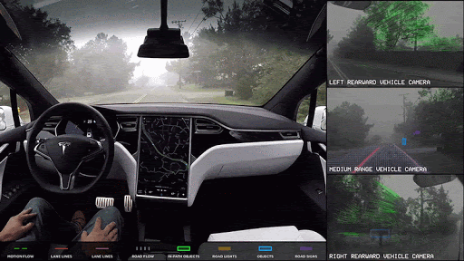

Artificial Intelligence in Autonomous Vehicles
Long-range radar, cameras, and LIDAR, a lot of advancement has been made in the autonomous vehicle segment. These technologies are used in different capacities and each of them collects different pieces of information. The information is of no use unless it is processed and any form of insights can’t be derived. This is where artificial intelligence is used and where it can be compared to the human brain. Some of its usage in autonomous vehicles are:
- Directing the car to the gas station or recharge station when it is running low on fuel.
- Adjust the trip’s directions based on known traffic conditions to find the quickest route.
- Incorporate speech recognition for advanced communication with passengers.
- Natural language interfaces and virtual assistance technologies.
And one of the biggest companies working on developing A.I. algorithms for self-driving cars is Tesla. In terms of autopilot functionality in vehicles, Tesla has long been a pioneer, even naming their device ‘Autopilot’. Their device is one of the most advanced and precise on the road, so the cars just keep getting progressively better. The main drawback is that only steering wheel inputs are used for driver tracking to assess if the driver is concentrating vs facial monitoring. With strong features coming out all the time, Tesla constantly upgrades Autopilot. It is so powerful, however, that it can be used just about anywhere, which means that it is up to the driver to concentrate and use it correctly as driver monitoring is only through the steering wheel.
The gif below shows Tesla's autonomous car
Smart Face Lock (facial recognition)
Face recognition is the procedural recognition of a human face along with the authorized name of the user. Face detection is a simpler task and can be considered as a beginner level project. Face detection is one of the steps that is required for face recognition. Face detection is a method of distinguishing the face of a human from the other parts of the body and the background. The haar cascade classifier can be used for the purpose of face detection and accurately detect multiple faces in the frame. The haar cascade classifier for frontal face is usually an XML file that can be used with the open-cv module for reading the faces and then detecting the faces. A machine learning model such as the histogram of oriented gradients (H.O.G) which can be used with labeled data along with support vector machines (SVM’s) to perform this task as well.
The best approach for face recognition is to make use of the DNN’s (deep neural networks). After the detection of faces, we can use the approach of deep learning to solve face recognition tasks. There is a huge variety of transfer learning models like VGG-16 architecture, RESNET-50 architecture, face net architecture, etc. which can simplify the procedure to construct a deep learning model and allow users to build high-quality face recognition systems. You can also build a custom deep learning model for solving the face recognition task. The modern models built for face recognition are highly accurate and provide an accuracy of almost over 99% for labeled datasets. The applications for the face recognition models can be used in security systems, surveillance, attendance systems, and a lot more.
The images below shows Boarding gates with facial recognition technology at Beijing West railway station